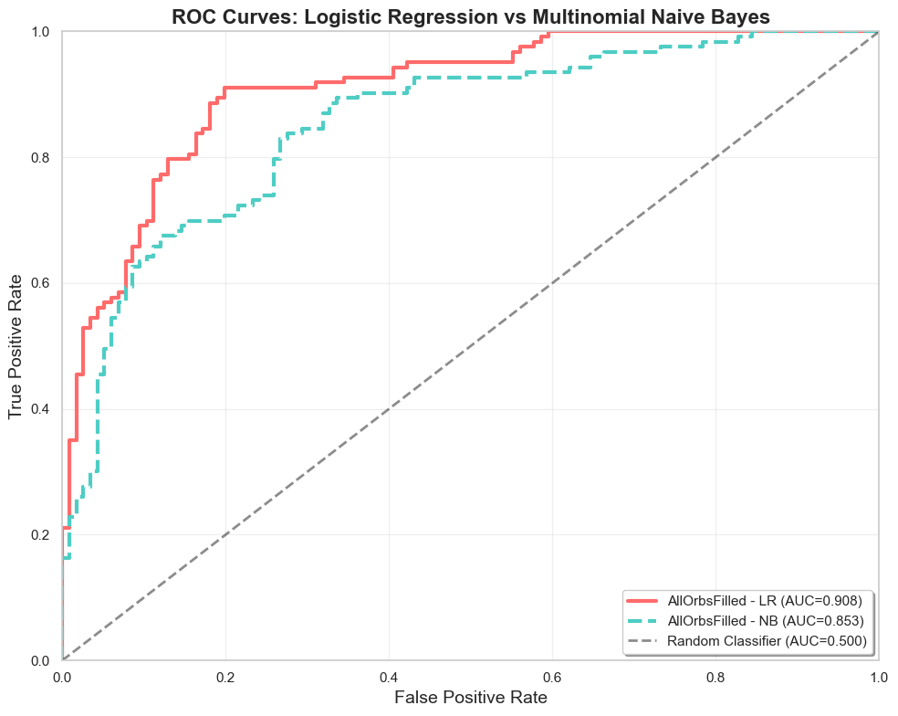
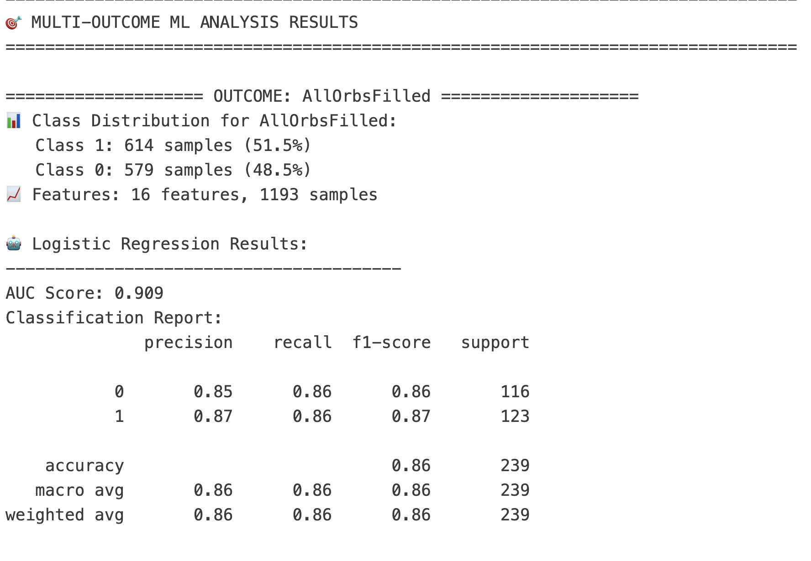
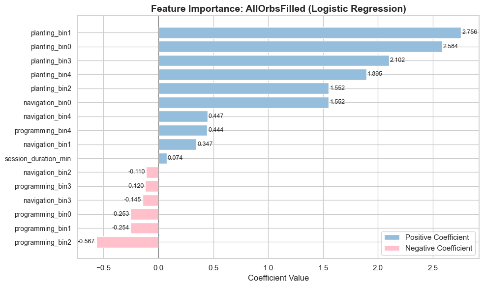
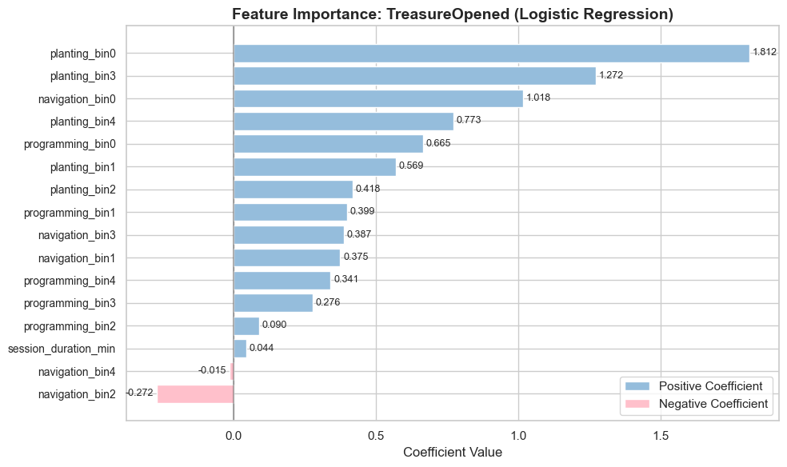

1.5 Predictive Validation: Can Behavioral Transitions Predict Learning Outcomes?
Motivation
Change point analysis revealed correlational patterns between behavioral transitions and learning success. To understand the multidimensional nature of player behavior and predict learning outcomes, we move beyond event-level anomaly detection toward comprehensive player state modeling.
The findings from change point analysis revealed two important dimensions that could inform predictive modeling: temporal patterns (when behavioral shifts occur during gameplay progression) and behavioral patterns (which types of player actions emerge as significant transitions). However, observational correlation does not guarantee predictive validity.
Question:
Do these temporal and behavioral factors really have predictive power that can guide effective player state discovery?
Methodology
Feature extraction from change point insights:
(add diagram if time)
- Temporal aspects: time bin distribution, session duration
- Behavioral aspects: event types and frequencies (player actions)
Supervised learning validation:
- Data: 1,193 sessions with extracted temporal + behavioral features
- Methods: Logistic regression, MultinomialNB (LR showed superior AUC)
- Target: Succes prediction for two distinct game achievements (AllOrbsFilled, TreasureOpened)
Key Findings
Strong Predictive Performance:
- Strong discrimination power: Logistic regression achieved AUC 0.909 with 86% accuracy on held-out test data (239 sessions).
- Balanced performance: Consistent precision (85-87%) and recall (86%) across success/failure classes, demonstrating reliable prediction capability
- Behavioral-temporal interactions drive prediction: Change point-derived features show genuine predictive validity beyond observational correlation
|  LR & MultinominalNB AUR on Predicting Game Goal 1 |  Summary Table |
Feature Importance Rankings:
- Planting activities emerge as strongest success predictors across all gameplay phases (coefficients 1.55-2.76)
- Navigation shows phase-dependent effects: positive early game, negative late game
- Programming activities show negative associations, potentially indicating struggle patterns
|  LR Feature Ranking on Game Goal 1 |  LR Feature Ranking on Game Goal 2 |
Next Steps
Transition to Player State Discovery:
With validated predictive power established, these behavioral-temporal features provide a robust foundation for t-SNE analysis to discover distinct player states and learning trajectories during collaborative gameplay.
Future Methodological Refinements:
Disentangle phase effects from behavioral effects through separate feature engineering (behavioral totals vs. temporal patterns vs. interaction terms) to understand whether timing or action type drives predictive power.